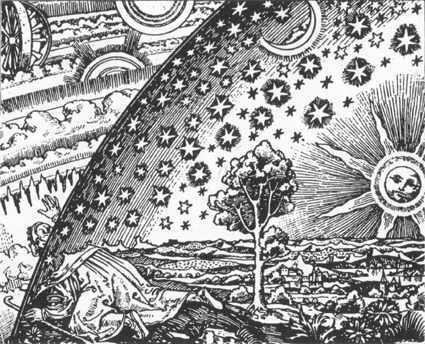

The
Sonoran Desert Toad
The
Sonoran Desert Toad
The
Sonoran Desert Toad
Bufo alvarius

A Google newsgroup message to Bob Wallace regarding an experience with 5-MeO-DMT:
From: Oz (wiz@oz.org)
Subject: RE: 5-meo-DMT First Time Question (attn Bob Wallace)
Newsgroups: alt.drugs.psychedelics
Date: 2001-06-26 18:40:30 PST
Bob,
First, let me say that I am a long time observer of
this group, and I find your opinions to be some of the
most reliable, credible information that is to be
found here.
Until recently, I've considered myself to be a fairly
well grounded, healthy individual, with a firm grip on
reality...however, I am no longer quite so convinced
about the firmness of the reality that surrounds us,
and that if nothing else, lack of perspective alone
makes it nearly impossible to fully grasp how the
world that we live and operate in operates at any
level beyond illusion.
While I will try to provide a reasonably objective
trip report below, you must understand that my beliefs
have been drastically altered at a level deeper than I
was heretofore aware even existed. Also, bear in mind
I am *not* inexperienced when it comes to 'powerful'
psychedelic exploration.
With that, here goes:
First 5meo trip:
40-50mg smoked using a classic dmt freebase pipe. One
hit, as deep as possible.
Hold it in till I feel the wave washing over me.
As I exhale, the smoke seems to act like a solvent,
dissolving all reality before my eyes.
'Oh fuck, I've killed myself'
Within 3-5 seconds, the 'canon' fires me through time
and space, and almost immediately, I am in a golden
city, surrounded by beings that are vaguely humanlike.
**** This place was not alien to me, I had been
here many times before. At the same instant I arrived,
a thorough knowledge of this place, already in my
mind, and was now accessible. It was as if you took
some tribal native, dropped him in the middle of New
York City, and he was able to function as if he had
lived there all his life. I had a knowledge and
understanding of the place that seemed to me to have
taken 1000 lifetimes to acquire. Even the looks I got
from the entities seemed to indicate I wasn't a
stranger to the place. ****
Then I though 'It's ok if I died, this is what is
real. This is HOME.'
As if I was connected to the cannon with a bungee
cord, I felt a tugging, and soon, too soon, I was
involuntarily being pulled away. As the city became
distant, I felt as though I was being pulled backwards
through a 'gel' or 'membrane' of some sort. I felt all
the knowledge of the place and it's entities that had
been 'illuminated' in my mind was being masked again,
put away into inaccessible regions.
Then I was pulled through the void for a short time.
And abruptly, I was back in my chair, experiencing a
different type, but as powerful as I've ever
experienced, visuals. While I thought 'boy, these
visuals are very impressive, I should be impressed', I
found them to be unimportant in the wake of the
experience I had just had. In fact, I found the
remaining 20 minutes of effects to be annoying in the
sense that they were interfering with my ability to
share what I had just experienced.
Within an hour I felt I had returned to baseline.
But it was not to be.
Over the next 5 days, I found more and more details of
where I had been and what I had seen coming back to
me, trickling in at inopportune moments sometimes, and
being forcibly 'dug' out at others.
I was forced to reconsider each and every aspect of my
life, and put *everything* into it's new place.
I was relieved to find out I still loved those I loved
previously, but almost everything outside of that
became much less important, if not entirely dismissed
as illusionary.
The parts of my life I still believed in became much
more concrete, and the rest remained dissolved by the
'solvent' I blew out of my mouth after the hit.
Within 2 days I realized I had developed what seemed
to me to be a new sense. I think it will be impossible
to explain that here (I engaged in 9 hours of very,
very heavy conversation, with a friend, trying to
explain it). This sense seems to give me a feeling of
life forces all around, but not life in the classical
sense, rather, awareness of a unified, all encompassing
consciousness. It emanates from dark forests, the night
sky, the sea, and even feelings, as I drive past
cemeteries, that those buried beneath, still live in
some way, not detectable, not in some 'living dead'
sense, but that there is some pulsing, invisible
afterglow within the seemingly vacant corpses. I
realize this might sound gruesome, but It provides me
with a sense of solace and peace beyond belief.
I found the strength to quit my job, I realized how
absurd it was to pursue something so empty and
meaningless that didn't bring me fulfillment.
I joined political movements that I used to only
'silently' agree with.
After a week or so, I retained my new found consciousness, but I stopped
distracting me, and I settled into it, becoming at ease with the situation.
For purposes of clarification (and upon refection after doing it several more
times since), I would define the initial experience as following this order:
5Meo-->The Canon->The City/Entities-->'Bungee cord' beginning to tug-->The
gel/membrane-->The void-->Back into my body->Ancillary effects
Second 5meo trip:
25mg(?) attempted to smoke/lighter died, unknown how much actually consumed.
I only managed to get to the 'void'. Again, for purposes of clarification,
the order this time was:
5Meo-->The Canon-->The void-->Bungee cord beginning to tug--> Back into my
body->Ancillary effects
***I learned nothing from this experience, and from reading other reports,
it seems that the 'void' is as far as the vast majority of 5meo users
get.***
An incredibly powerful experience to be sure, but empty, like a
roller coaster ride.
Third 5meo trip:
25mg(?) attempted to smoke, this time the glass cracked from the heat of the
butane torch. Unknown how much actually consumed.
Not even the void this time, straight to the 'tryp' effects, and back to
baseline in 30 minutes.
At this point, I was beginning to wonder if what I experienced the first
time actually happened.
Forth 5meo trip:
35mg smoked - Success!
Back to the golden 'city'!
The difference this time, was that I had a little more time, and seemed to
be able to take one step forward, and open my 'mouth' to speak before the
cord pulled me back.
I think with focus, I may be able to stay longer, though I wonder if you
fight the cord long enough, you just don't come back at all.
Anyway, I could fill volumes with these experiences, and I hesitated to even
write this down for some time. I was urged by a friend to share this
information. For each detail I write down, I feel as though I'm leaving 100
more out.
I hope your journeys get you there.
-Oz <wiz@oz.org> wrote:
>Bob Wallace wrote:
>>Usually I recommend people start with a low dose, but so many people
>try 5 once and just cannot find the courage to do it again, but at the same
>
>Bob,
>First, let me say that I am a long time observer of this group, and I find
>your opinions to be some of the most reliable, credible information that
>is to be found here.
Thank you!
>Until recently, I've considered myself to be a fairly well grounded, healthy
>individual, with a firm grip on reality...however, I am no longer quite so
>convinced about the firmness of the reality that surrounds us, and that if
>nothing else, lack of perspective alone makes it nearly impossible to
>fully grasp how the world that we live and operate in operates at any
>level beyond illusion.
That's a common message in many Eastern religious systems...
A lot of people read this and think it's a pretty metaphor... ;)
>First 5meo trip:
>40-50mg smoked using a classic dmt freebase pipe. One
>hit, as deep as possible.
That's a huge dose mentally, it seemed to work for you, but
I would caution others to start at a lower level...
>As I exhale, the smoke seems to act like a solvent,
>dissolving all reality before my eyes.
>'Oh fuck, I've killed myself'
Ah yes...
>Within 3-5 seconds, the 'canon' fires me through time
>and space, and almost immediately, I am in a golden
>city, surrounded by beings that are vaguely humanlike...
>As if I was connected to the cannon with a bungee
>cord, I felt a tugging, and soon, too soon, I was
>involuntarily being pulled away...
>And abruptly, I was back in my chair, ...
>Within an hour I felt I had returned to baseline.
>But it was not to be.
>
>Over the next 5 days, I found more and more details of
>where I had been and what I had seen coming back to
>me, trickling in at inopportune moments sometimes, and
>being forcibly 'dug' out at others.
This might be explained (from a brain perspective) as a
kind of "flashback", though that doesn't mean it's a
problem or concern really...
>I was forced to reconsider each and every aspect of my
>life, and put *everything* into it's new place.
>
>I was relieved to find out I still loved those I loved previously, but
>almost everything outside of that became much less important,
>if not entirely dismissed as illusionary...
>
>Within 2 days I realized I had developed what seemed to me to
>be a new sense....This sense seems to give me a feeling of
>life forces all around, ... awareness of a unified, all encompassing
>consciousness. It emanates from dark forests, the night sky, ...
>as I drive past cemeteries, that those buried beneath, still live in
>some way, ... there is some pulsing, invisible afterglow within ...
>It provides me with a sense of solace and peace beyond belief.
I know what you mean, and have heard this expressed in many
ways: a knowledge that we are all part of some unified wholeness
or being, that our experience here as separate beings going through
our separate lives is an illusion. Sometimes this gets expressed
as the idea that one cosmic being divided its consciousness into
many separate beings (for whatever reason).
>I found the strength to quit my job, I realized how absurd it was to
>pursue something so empty and meaningless that didn't bring me
>fulfillment.
Well, that's one perspective...
Note that if our lives and world here really are illusions, Someone
has gone to a lot of trouble to create the illusion, probably for
some good reason.
Look at the movie analogy. All the actors and audience know it
the movie story is an illusion. But (generally) an actor does not
suddenly say, "Hey, everyone, this isn't real, we're just actors
in some movie, its empty and meaningless for me to continue
to play this artificial role." The actual role in the movie may be
uninteresting and unfulfilling by itself, but this part is integral to
the whole movie, and the movie has meaning (on our level) as
a statement of the human condition or whatever.
That's not to assume your "role" should be to continue your old
job, or quit, or whatever. Knowing you're really an actor still does
not present you with the script ;) though one can develop an intuition
as to what the "unity" (or God if you prefer) would like you to do next.
>After a week or so, I retained my new found consciousness, but I stopped
>distracting me, and I settled into it, becoming at ease with the situation.
I've heard another report of a strong 5 experience in which the person
felt different for about a week; they described it as "like all the bricks
which make up my body were still there, but the mortar was gone, and
the bricks stayed in position by some magic; I could still function
without problems, but felt "looser" and more free."
Yes, one can have the knowledge of and a deep connection to the
underlying Unity of reality beyond the everyday illusion, and still carry
on one's part in the illusion. "Before enlightenment, you chop
wood
and carry water; after enlightenment, you chop wood and carry
water."
>Second 5meo trip:
>25mg(?) attempted to smoke/lighter died, unknown how much actually consumed.
One reason to carefully measure your doses is so you can try to recreate
particularly interesting experiences...
>I only managed to get to the 'void'...
>***I learned nothing from this experience, and from reading other reports,
>it seems that the 'void' is as far as the vast majority of 5meo users get.***
I think a lot of people only get to this "void", or at least don't remember
anything beyond this. There may be a similarity with "plain" DMT ;)
in that people report one needs to smoke enough to get past a certain
"threshold".
At the same time, I must repeat the caution that this is a very intense
drug, and people do sometimes get traumatized by the experience,
and have significant PTSD type symptoms for some time.
>...I think with focus, I may be able to stay longer, though I wonder if you
>fight the cord long enough, you just don't come back at all.
I believe, if your basic intention is to stay alive (you are not depressed
or otherwise suicidal), it's safe to try to stay there, and "let go" into
the experience, and assume the drug will wear off and you'll come back.
>Anyway, I could fill volumes with these experiences, and I hesitated to
>even write this down for some time. I was urged by a friend to share this
>information. For each detail I write down, I feel as though I'm leaving 100
>more out.
Yes, written language is always incomplete... Visual images can usually
be described, but some of the feelings, like of connection or unity, are
hard to really express...
- Bob Wallace (just my opinion)